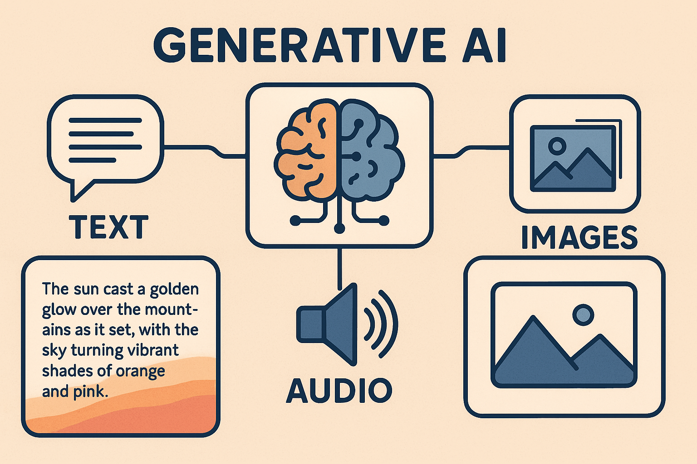
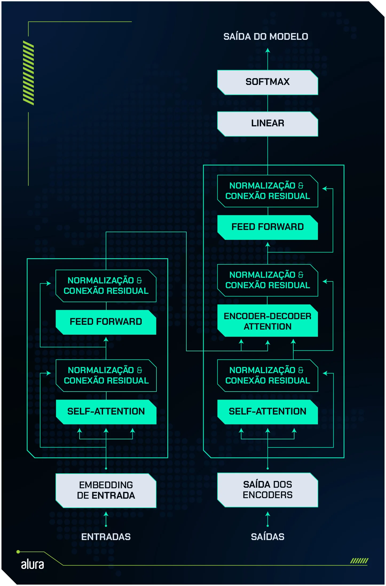
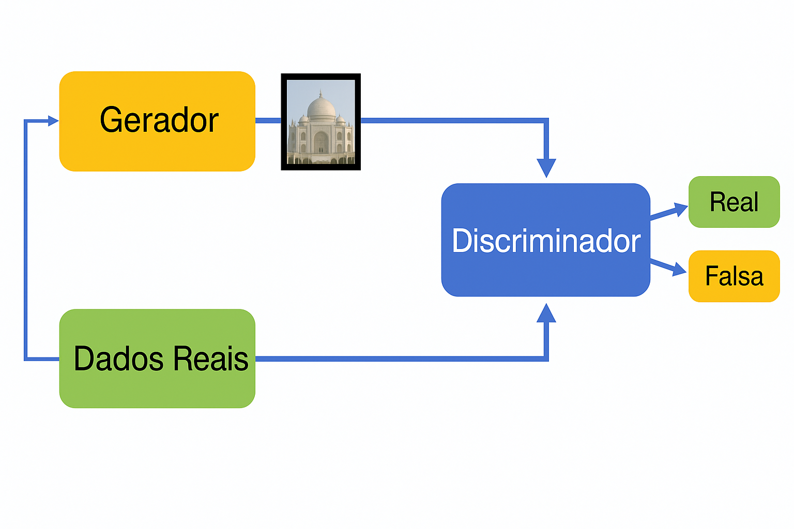
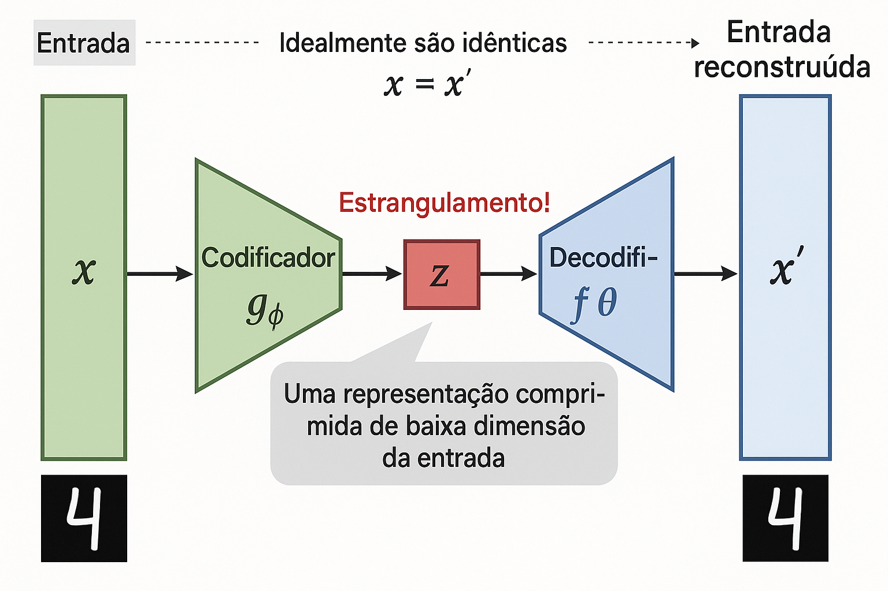
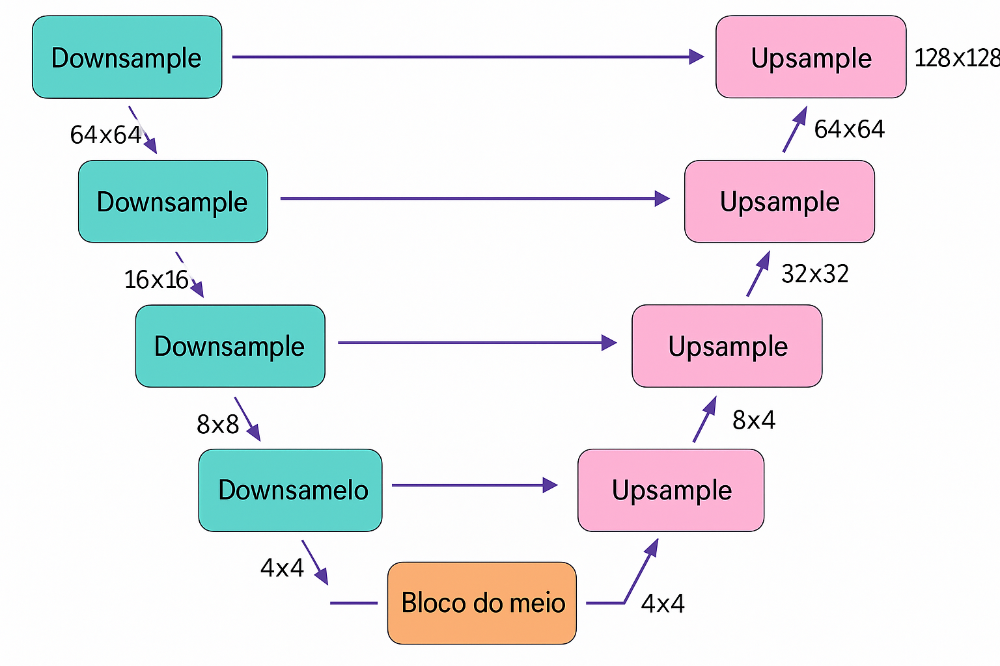

Pergunta
Machine learning e deep learning ainda são relevantes na era das LLMs?
Qual a organização?
 {fig-align=“center”,width=270}
{fig-align=“center”,width=270}
O que é o machine learning?
| Renda Mensal (R$) | Tempo de Relacionamento (meses) | Risco de Inadimplência |
|---|---|---|
| 2.500 | 8 | Alto |
| 4.800 | 36 | Baixo |
| 3.200 | 12 | Médio |
| 8.500 | 60 | Baixo |
| 1.800 | 3 | Alto |
| 5.300 | 24 | Baixo |
Subdivisões do Machine learning
Aprendizado supervisionado
Aprendizado não-supervisionado
Aprendizagem por reforço
Aprendizado supervisionado
Regressão
Regressão
Regressão
\[ y = a \cdot x +b \]
\[ y = 0.00028 \cdot x -452196 \]
Regressão
Classificação
Classificação
Classificação
Classificação
\[ \sigma(\mathbf{x}) = \frac{1}{1 + e^{-(w^T \mathbf{x} + b)}} \]
Aprendizado supervisionado
Aprendizado supervisionado
| Id | Idade | IMC | Glicose | Pressão | Diabetes 🎯 |
|---|---|---|---|---|---|
| 1 | 45 | 29.0 | 130 | 80 | ✅ Sim |
| 2 | 34 | 22.5 | 98 | 70 | ❌ Não |
| 3 | 54 | 31.2 | 145 | 85 | ✅ Sim |
| 4 | 29 | 24.1 | 92 | 75 | ❌ Não |
| 5 | 62 | 33.8 | 160 | 90 | ✅ Sim |
Detecção de fraude
Robô cometendo fraude
Previsão de churn
| customer_id | idade | tempo_de_contrato (meses) | valor_mensal | utilizacao_app (dias/mês) | reclamacoes | churn |
|-------------|-------|--------------------------|--------------|---------------------------|-------------|-------|
| 001 | 25 | 12 | 79.90 | 22 | 0 | 0 |
| 002 | 42 | 6 | 99.90 | 10 | 2 | 1 |
| 003 | 34 | 24 | 59.90 | 25 | 0 | 0 |
| 004 | 28 | 3 | 89.90 | 5 | 1 | 1 |
| 005 | 50 | 36 | 49.90 | 30 | 0 | 0 |Otimização de cadeia de suprimentos
| produto_id | centro_distribuicao | estoque_atual | demanda_prevista | tempo_reposicao (dias) | custo_transporte | prioridade |
|------------|---------------------|---------------|------------------|-----------------------|------------------|------------|
| 1001 | SP | 150 | 200 | 2 | 500 | 1 |
| 1002 | RJ | 80 | 60 | 3 | 400 | 2 |
| 1003 | MG | 50 | 100 | 5 | 700 | 1 |
| 1004 | RS | 200 | 180 | 4 | 300 | 3 |
| 1005 | BA | 90 | 120 | 6 | 600 | 2 |Aprendizado não-supervisionado
| Id | Idade | IMC | Glicose | Pressão |
|---|---|---|---|---|
| 1 | 45 | 29.0 | 130 | 80 |
| 2 | 34 | 22.5 | 98 | 70 |
| 3 | 54 | 31.2 | 145 | 85 |
| 4 | 29 | 24.1 | 92 | 75 |
| 5 | 62 | 33.8 | 160 | 90 |
Clustering
PCA
Aplicações
Segmentação de clientes
Detecção de anomalias
Agrupamento de textos
Descoberta de padrões de consumo (regras de associação)
Aprendizagem por reforço

Genshin Impact
Aprendizagem por reforço

Aprendizagem por reforço
Perceptron
Perceptron
\[ \hat{y} = f\left( \sum_{i=0}^{m} w_i x_i \right) \]
Redes Neurais Profundas
Treinando uma rede
Propagação
| Id | Idade | IMC | Glicose | Pressão | Diabetes 🎯 |
|---|---|---|---|---|---|
| 1 | 45 | 29.0 | 130 | 80 | ✅ Sim |
| 2 | 34 | 22.5 | 98 | 70 | ❌ Não |
| 3 | 54 | 31.2 | 145 | 85 | ✅ Sim |
| 4 | 29 | 24.1 | 92 | 75 | ❌ Não |
| 5 | 62 | 33.8 | 160 | 90 | ✅ Sim |
Retropropagação
Arquiteturas de Redes Neurais

https://www.asimovinstitute.org/neural-network-zoo/
Redes Neurais Convolucionais (CNNs)
Redes Neurais Convolucionais (CNNs)
Redes Neurais Convolucionais (CNNs)
https://alexlenail.me/NN-SVG/LeNet.html
Visão Computacional para Indústria 4.0
https://www.kaggle.com/datasets/salmaneunus/railway-track-fault-detection
Saúde
https://www.kaggle.com/datasets/paultimothymooney/chest-xray-pneumonia
Sustentabilidade e Meio Ambiente
https://www.kaggle.com/datasets/akhilchibber/deforestation-detection-dataset
Detecção de objetos - Agricultura
https://www.kaggle.com/datasets/trainingdatapro/ripe-strawberries-detection
Segmentação de objetos
https://www.sciencedirect.com/science/article/abs/pii/S0926985117307632
Transferência de aprendizado
https://www.cs.toronto.edu/~kriz/cifar.html
Transferência de aprendizado
- Fine-tuning
Transferência de aprendizado
Fine-tuning
Transferência de domínio
Redes Neurais Recorrentes (RNNs)
Redes Neurais Recorrentes (RNNs)
LSTM (Long Short-Term Memory)
GRU ( Gated Recurrent Unit )
Séries temporais
https://www.kaggle.com/datasets/abhisheksjha/time-series-air-quality-data-of-india-2010-2023/data
IoT e sensores
Completação de texto ou código
Time Series Air Quality
Recursos
FrameWorks
Inteligência Artificial Generativa
IA Generativa
O que é Generative AI?
- Objetivo: Aprender a distribuição de probabilidade dos dados de treinamento \(P(\mathbf{x})\).
- Tarefa: Gerar novas amostras \(\mathbf{x}_{novo} \sim P(\mathbf{x})\) que sejam realistas e diversas.
O que é Generative AI?
- Diferença para IA Discriminativa:
- Discriminativa (ex: Classificação): Aprende \(P(y|\mathbf{x})\) - a probabilidade da classe \(y\) dado a entrada \(\mathbf{x}\). Foco em mapear entrada para saída.
- Generativa: Aprende \(P(\mathbf{x})\) (ou \(P(\mathbf{x}, y)\)). Foco em entender como os dados são gerados. Tecnologias Chave: LLMs (Transformers), Modelos de Difusão, GANs, VAEs.
Transformers
Transformer
Completação
Hoje acordei e
Completação
[Hoje] [acordei] [e]
Completação
[Hoje] [acordei] [e]
[caí ] .9
[ ] 0.01
[ levantei ] 0.008
Completação
[Hoje] [acordei] [e] [caí ]
Completação
[Hoje] [acordei] [e] [caí ]
[da ] 0.8
[pizza ] 0.1
[ gato ] 0.1
Tokenização
“O mundo é redondo, mas está ficando cada mais quadrado.”
Byte Pair Encoding - Passo 1
Primeiro, dividimos o texto em palavras e adicionamos um símbolo especial ao final de cada palavra (por exemplo, para indicar o fim da palavra):
“O mundo é redondo, mas está ficando cada mais quadrado.”
Byte Pair Encoding - Passo 2
Cada palavra é decomposta em caracteres (incluindo o símbolo de fim de palavra):
O
m u n d o
é
r e d o n d o ,
m a s
e s t á
f i c a n d o
c a d a
m a i s
q u a d r a d o .
Byte Pair Encoding - Passo 3
Agora, contamos todos os pares de caracteres adjacentes mais frequentes em todas as palavras. Exemplo: “m u”, “u n”, “n d”, “d o” em “mundo”.
Byte Pair Encoding - Passo 4
Unimos o par mais frequente em um novo símbolo. Por exemplo, se “a s” aparece muito, vira “as”. Repetimos esse processo várias vezes.
Exemplo de iterações (simplificado):
Iteração 1: “a s” → “as”
Iteração 2: “m a” → “ma”
Iteração 3: “n d” → “nd”
Iteração 4: “d o” → “do” …
Byte Pair Encoding - Passo 5
Depois de várias junções, as palavras originais são representadas como sequências de subpalavras ou tokens BPE.
Exemplo (imaginando algumas junções):
“quadrado” pode virar: [“qua”, “dra”, “do”, “. ”]
“ficando” pode virar: [“fi”, “can”, “do”, “”]
“redondo” pode virar: [“re”, “don”, “do”, “, ”]
Raízes das palavras
feliz → [“feliz”]
felicidade → [“feli”, “cidade”]
infeliz → [“in”, “feliz”]
infelicidade → [“in”, “feli”, “cidade”]
felizmente → [“feliz”, “mente”]
infelizmente → [“in”, “feliz”, “mente”]
superfeliz → [“super”, “feliz”]
Embeddings
| O | mun | do | é | re | don | do , | mas | es | tá | fi | can | do | ca | da | vez | mais | qua | dra | do . | … |
|---|---|---|---|---|---|---|---|---|---|---|---|---|---|---|---|---|---|---|---|---|
| 0.3 | 0.2 | 0.4 | 0.2 | 0.6 | 0.5 | 0.3 | 0.4 | 0.2 | 0.5 | 0.7 | 0.3 | 0.2 | 0.4 | 0.5 | 0.6 | 0.9 | 0.5 | 0.4 | 0.3 | … |
| 0.7 | 0.8 | 0.1 | 0.9 | 0.3 | 0.7 | 0.2 | 0.8 | 0.7 | 0.2 | 0.1 | 0.8 | 0.5 | 0.3 | 0.1 | 0.2 | 0.1 | 0.4 | 0.2 | 0.7 | … |
| 0.2 | 0.4 | 0.3 | 0.7 | 0.7 | 0.6 | 0.8 | 0.6 | 0.9 | 0.4 | 0.4 | 0.2 | 0.8 | 0.7 | 0.6 | 0.9 | 0.4 | 0.2 | 0.5 | 0.8 | … |
| 0.5 | 0.1 | 0.7 | 0.1 | 0.2 | 0.3 | 0.4 | 0.2 | 0.6 | 0.1 | 0.6 | 0.5 | 0.1 | 0.8 | 0.7 | 0.1 | 0.8 | 0.7 | 0.3 | 0.2 | … |
Embeddings
- Cada token é representado por um vetor
Tradução
https://jalammar.github.io/illustrated-transformer/
Detalhando
https://jalammar.github.io/illustrated-transformer/
Encoder
https://jalammar.github.io/illustrated-transformer/
Arquitetura transformers
Arquitetura
Aplicações de Transformers
- Processamento de Linguagem Natural (NLP):
- Tradução Automática (Google Translate)
- Geração de Texto (GPT, Gemini, Llama, Claude - base das LLMs)
- Sumarização de Texto
- Respondendo Perguntas (Question Answering)
- Análise de Sentimento
- Classificação de Texto
Aplicações de Transformers
- Visão Computacional:
- Classificação de Imagens (Vision Transformer - ViT)
- Detecção de Objetos (DETR)
- Segmentação de Imagens
- Geração de Imagens (a partir de texto, combinado com outras técnicas)
Aplicações de Transformers
- Outras Áreas:
- Previsão de Séries Temporais
- Bioinformática (AlphaFold - previsão de estrutura de proteínas)
- Sistemas de Recomendação
- Processamento de Áudio
LLMs (Large Language Models)
- Definição: Modelos de linguagem baseados em Transformers com bilhões (ou trilhões) de parâmetros, treinados em quantidades massivas de texto (internet, livros, etc.).
LLMs (Large Language Models)
- Capacidades:
- Compreensão e geração de texto coerente e contextualmente relevante.
- Tradução, sumarização, resposta a perguntas.
- Raciocínio (limitado), escrita criativa, geração de código.
- Few-shot / Zero-shot learning: Capacidade de realizar tarefas para as quais não foram explicitamente treinados, apenas com base na descrição da tarefa ou poucos exemplos no prompt.
LLMs (Large Language Models)
- Exemplos: GPT-4 (OpenAI), Gemini (Google), Llama 3 (Meta), Claude 3 (Anthropic).
GANs (Redes Generativas Adversariais)
GANs (Redes Generativas Adversariais)
GANs (Redes Generativas Adversariais)
- Conceito: Duas redes neurais competindo:
- Gerador (Generator): Tenta criar dados sintéticos (ex: imagens falsas) que pareçam reais. Começa a partir de um vetor de ruído aleatório.
- Discriminador (Discriminator): Tenta distinguir entre dados reais (do dataset de treino) e dados falsos (criados pelo Gerador). É um classificador binário.
GANs (Redes Generativas Adversariais)
- Treinamento Adversarial:
- O Gerador aprende a enganar o Discriminador.
- O Discriminador aprende a não ser enganado.
- Elas melhoram juntas em um jogo de “gato e rato”.
GANs (Redes Generativas Adversariais)
- Aplicações: Geração de imagens realistas, style transfer, super-resolução, data augmentation.
- Desafios: Treinamento pode ser instável (mode collapse, non-convergence).
VAEs
VAE
Modelos de Difusão
U-NET
Modelos de Difusão
- Conceito: Geram dados (principalmente imagens) aprendendo a reverter um processo de adição de ruído.
Modelos de Difusão
- Processo:
- Forward Process (Noising): Gradualmente adiciona ruído Gaussiano a uma imagem real ao longo de vários passos, até que se torne puro ruído.
- Reverse Process (Denoising): Treina uma rede neural (geralmente uma U-Net) para prever e remover o ruído adicionado em cada passo, começando de um ruído aleatório e gradualmente reconstruindo uma imagem coerente.
Modelos de Difusão
- Qualidade: Produzem imagens de altíssima qualidade e realismo.
- Controle: Podem ser condicionados por texto (text-to-image) ou outras imagens.
- Exemplos: DALL-E 2/3, Stable Diffusion, Midjourney, Imagen.
Diferenças entre LLMs, GANs e Modelos de Difusão
| Característica | LLMs (Transformers) | Modelos de Difusão | GANs |
|-----------------------|----------------------------------------|------------------------------------------------|----------------------------------------------|
| Domínio Principal | Texto, Código | Imagens (alta qualidade), Áudio | Imagens, Vídeo, Dados Tabulares |
| Mecanismo Base | Auto-atenção, Predição Autoregressiva | Reversão de processo de ruído (Denoising) | Competição Gerador vs Discriminador |
| Qualidade (Imagem) | N/A (para texto é alta) | Muito Alta | Alta (mas pode ter artefatos) |
| Estabilidade Treino | Geralmente estável (custoso) | Geralmente estável | Pode ser instável (mode collapse) |
| Controle Geração | Prompt de texto | Prompt de texto, Imagem | Vetor Latente, Condicionamento |
| Velocidade Geração | Rápida (paralelizável) | Lenta (múltiplos passos de denoising) | Rápida (um passo do gerador) |Desafios e Limitações da IA
Apesar dos avanços impressionantes, a IA (incluindo ML, DL e Generativa) ainda enfrenta desafios significativos:
- Complexidade e Interpretabilidade (“Black Box”)
- Viés e Justiça
- Privacidade e Segurança
- Robustez e Generalização
- Ética e Impacto Social
IA Explicável (XAI)
- Problema: Modelos complexos (Deep Learning, LLMs) funcionam como “caixas-pretas” - é difícil entender por que eles tomam uma decisão específica.
- Objetivo (XAI): Desenvolver técnicas para tornar as previsões e decisões dos modelos de IA compreensíveis para humanos.
IA Explicável (XAI)
- Importância:
- Confiança: Usuários precisam confiar nas decisões (ex: diagnóstico médico).
- Debugging: Entender por que um modelo falha.
- Justiça (Fairness): Verificar se o modelo não usa vieses indesejados.
- Conformidade (Compliance): Regulamentações (como GDPR) podem exigir explicabilidade.
- Técnicas: SHAP, LIME, Mapas de Atenção, Contrafactuais.
Viés Algorítmico
- Problema: Modelos de IA aprendem a partir de dados, e se os dados refletem vieses históricos ou sociais (de gênero, raça, etc.), o modelo aprenderá e poderá até amplificar esses vieses.
Viés Algorítmico
- Consequências: Resultados injustos ou discriminatórios em áreas críticas como contratação, concessão de crédito, reconhecimento facial, justiça criminal.
- Fontes de Viés: Dados de treinamento desbalanceados ou tendenciosos, escolhas de features, design do algoritmo.
Viés Algorítmico
- Mitigação:
- Curadoria cuidadosa e auditoria dos dados.
- Uso de métricas de justiça (fairness metrics).
- Algoritmos “conscientes da justiça” (fairness-aware algorithms).
- Pós-processamento das saídas do modelo.
Privacidade e Segurança
- Privacidade:
- Dados de Treinamento: Modelos (especialmente LLMs) são treinados com grandes volumes de dados, que podem conter informações pessoais ou sensíveis.
- Risco de Memorização: Modelos podem “memorizar” partes dos dados de treinamento e revelá-las inadvertidamente em suas saídas.
Privacidade e Segurança
- Privacidade:
- Ataques de Inferência: Tentativas de extrair informações privadas sobre os dados de treinamento a partir das previsões do modelo.
- Soluções: Privacidade Diferencial, Aprendizado Federado, Anonimização de dados.
Privacidade e Segurança
- Segurança:
- Ataques Adversariais: Pequenas perturbações (imperceptíveis para humanos) na entrada podem fazer o modelo errar completamente (ex: classificar um sinal de “Pare” como “Limite de Velocidade”).
Privacidade e Segurança
- Segurança:
- Envenenamento de Dados (Data Poisoning): Inserir dados maliciosos no conjunto de treinamento para corromper o modelo.
- Roubo de Modelo: Extrair a funcionalidade de um modelo proprietário através de consultas.
Generalização e Robustez dos Modelos
- Generalização: A capacidade do modelo de performar bem em dados novos e não vistos durante o treinamento. Um modelo que apenas memoriza os dados de treino (overfitting) não generaliza bem.
Generalização e Robustez dos Modelos
- Robustez: A capacidade do modelo de manter seu desempenho mesmo quando confrontado com:
- Pequenas Perturbações: Como nos ataques adversariais.
- Mudanças na Distribuição dos Dados (Domain Shift): O mundo real muda, e os dados podem começar a parecer diferentes daqueles com os quais o modelo foi treinado (ex: um modelo treinado no verão pode performar mal no inverno).
Generalização e Robustez dos Modelos
- Desafio: Modelos atuais, apesar de poderosos, podem ser frágeis e sensíveis a pequenas mudanças ou a dados ligeiramente fora da distribuição de treinamento.
Futuro do Machine Learning e IA Generativa
- Fundamentos Permanecem
- Convergência e Hibridização
- Multimodalidade
- Eficiência
- Raciocínio, Planejamento e Ferramentas
- PINNs
Arquiteturas
RAG
- Problema: LLMs “puros” podem alucinar (inventar fatos) e seu conhecimento é limitado aos dados de treinamento (podem estar desatualizados).
- Solução RAG: Combina um LLM pré-treinado com um mecanismo de busca/recuperação externo.
RAG
- Processo:
- Usuário faz uma pergunta.
- A pergunta é usada para buscar documentos/trechos relevantes em uma base de conhecimento externa (ex: artigos, documentos internos, web).
- Os trechos recuperados são adicionados ao prompt original do usuário.
- O LLM gera a resposta baseado no prompt aumentado (pergunta + contexto recuperado).
RAG
- Benefícios: Reduz alucinações, permite usar conhecimento atualizado ou específico de um domínio, possibilita citar fontes.
- Componentes Chave: Retriever (busca vetorial é comum), LLM.
Perguntas
QR Code